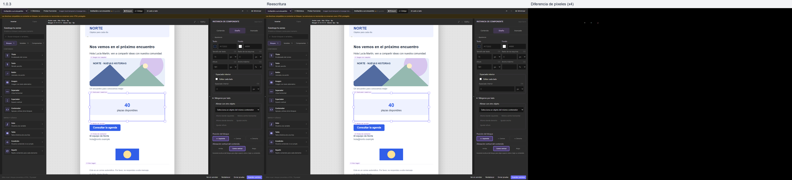
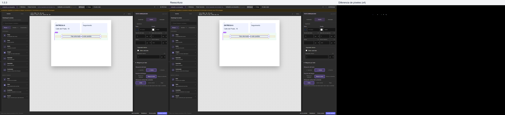
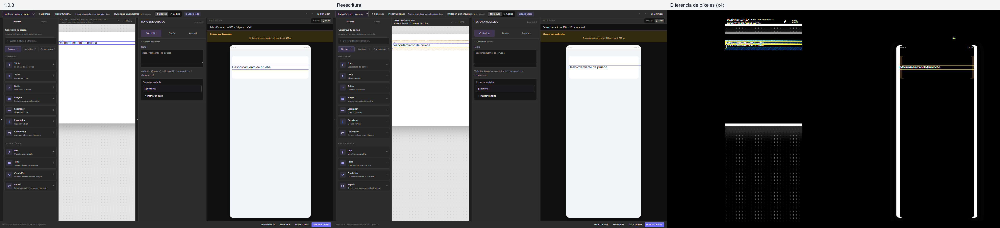

Mailcanvas · 1.0.3 y reescritura
Las imágenes muestran la versión anterior, la reescritura y la diferencia de píxeles amplificada. Abre cada PNG para examinarlo a resolución completa.
Inventario técnico · Comparación técnica · Métricas JSON
Altura y alineación vertical · Abrir imagen completa
Centrado del recuadro de ahorro · Abrir imagen completa
Selección y desbordamiento en preview · Abrir imagen completa